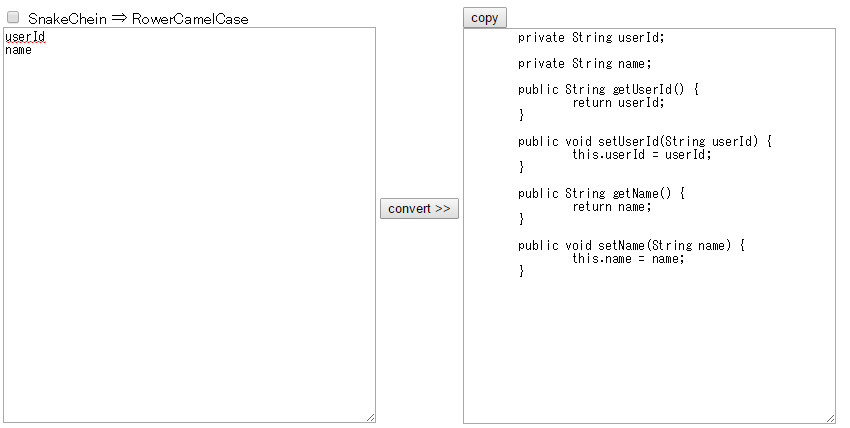
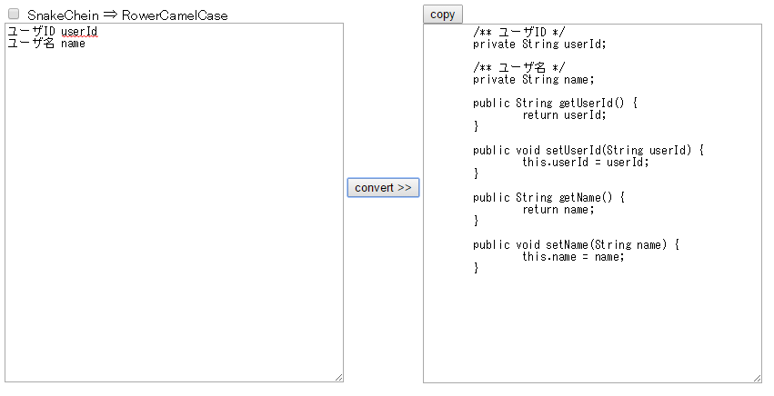
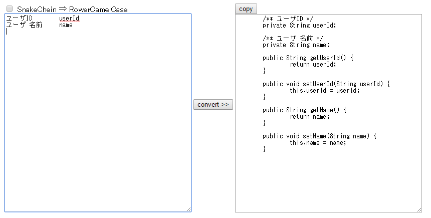
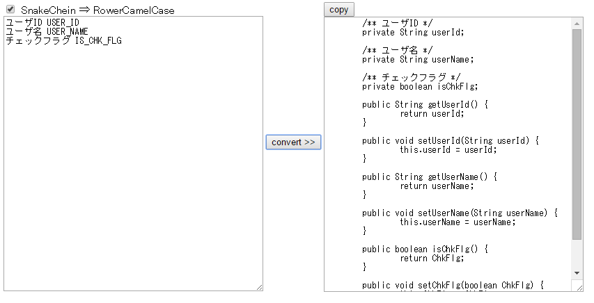

■convert button
変数名からbeanクラスに必要なメンバとgetter,setterを生成します。
1.型について
変数名がisで始まる場合、型をbooleanで生成します。
上記以外の場合、Stringで生成します。
2..javadocなしの場合は、1行に1変数を入力してください。

3.javadocありの場合、javadoc文字列 + tab + 変数または、
javadoc文字列 + space + 変数を入力してください。
tab区切りの場合、javadoc文字列にスペース入力可能です。
3.1.tabの場合

3.2.spaceの場合

4.SnakeChein(アンダースコア区切り)からRowerCamelCaseに変換する場合
SnakeChein ⇒ RowerCamelCaseにチェックを付けてください。

■copy button
copyボタンでクリップボードにコピーします。